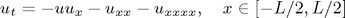
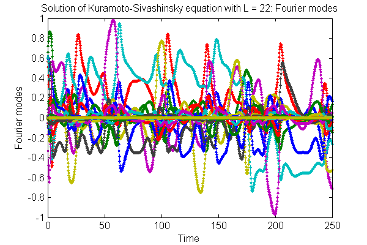
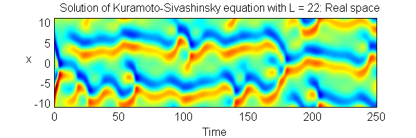
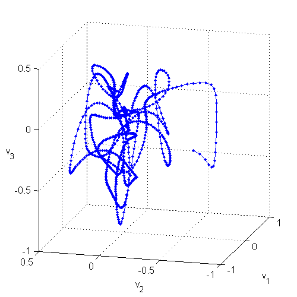
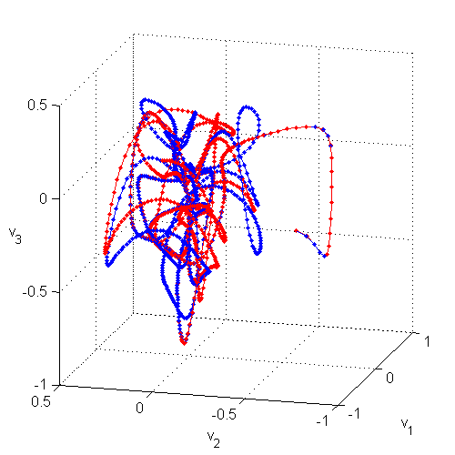
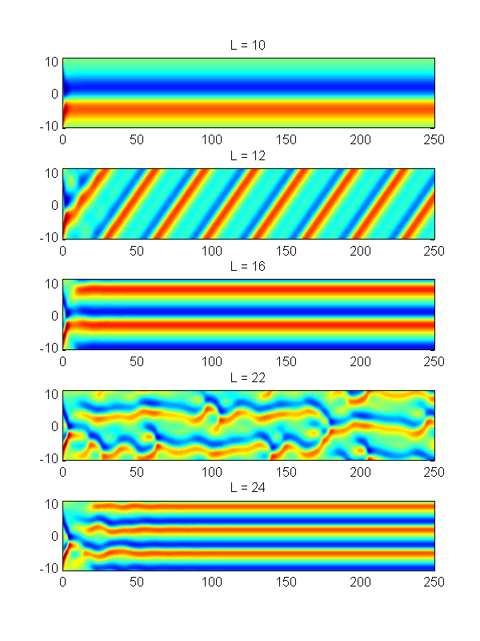
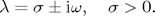
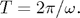
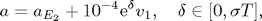

Regular and turbulent (chaotic) dynamics of Kuramoto-Sivashinsky equation
Contents

with periodic boundary condition:

The solutions depend on the parameter L.
Matlab function ksfmstp.m can be used to find numerical solution of the Kuramoto-Sivashinsky equation using Exponential Time Difference Runge-Kutta 4th order method (ETDRK4):
N = 64; L = 22; h = 0.25; nstp = 1000; a0 = zeros(N-2,1); a0(1:4) = 0.6; % just some initial condition [tt, at] = ksfmstp(a0, L, h, nstp, 1); fig1 = figure('pos',[5 550 600 400],'color','w'); plot(tt,at,'.-'); title('Solution of Kuramoto-Sivashinsky equation with L = 22: Fourier modes'); xlabel('Time'); ylabel('Fourier modes');
The same solution can be viewed in real space by transforming the solution using function ksfm2real.m:
[x, ut] = ksfm2real(at, L); fig2 = figure('pos',[5 270 600 200],'color','w'); pcolor(tt,x,ut); shading interp; caxis([-3 3]); title('Solution of Kuramoto-Sivashinsky equation with L = 22: Real space'); xlabel('Time'); ylabel('x','rotat',0);
The solution can be also viewed in the 'state subspace', spanned by selected eigenvectors of one of the equilibrium points
load('ks22statespace','v'); % v - subspace orthonormal vectors av = v'*at; % projection of solution onto the subspace fig3 = figure('pos',[610 450 500 500],'color','w'); plot3(av(1,:),av(2,:),av(3,:),'b.-'); grid on; xlabel('v_1'); ylabel('v_2'); zlabel('v_3','rotat',0); view(-75,15);
Sensitive dependence on initial condition
Start another solution with the nearby initial condition and see how it diverges from the first one.
a1 = a0; a1(1) = a1(1) + 1e-3; [tt, at1] = ksfmstp(a1, L, h, nstp, 1); av1 = v'*at1; figure(fig3); hold on; plot3(av1(1,:),av1(2,:),av1(3,:),'r.-');
Dependence of KS solutions on L
LL = [10 12 16 22 24]; fig4 = figure('pos',[500 100 600 800],'color','w'); for ii = 1:length(LL); [tt, at] = ksfmstp(a0, LL(ii), h, nstp, 1); [x, ut] = ksfm2real(at, LL(ii)); subplot(length(LL),1,ii); pcolor(tt,x,ut); shading interp; caxis([-3 3]); title(['L = ' num2str(LL(ii))]); end
The equilibria and travelling waves of KS equation with L = 22
File ks22equilibria contains information about equilibria and travelling waves of KS equation with L = 22. The data are organized as arrays of structures: eq for equilibria and tw for travelling waves:
eq(k).a - coordinates of equilibria in Fourier space, k = 1,2,3 (there are three equilibria).
eq(k).eig - eigenvalues of the Jacobian of the flow at equilibria
eq(k).evec - corresponding eigenvectors
tw(k).a - coordinates of travelling waves in Fourier space, k = 1,2
tw(k).c - speeds of the travelling waves
tw(k).eig and tw(k).evec - as for equilibria, except that the Jacobian is calculated in the frame travelling with the wave (with speed c).
Here we plot evolution of solutions starting at equilibria. Since the equilibria are unstable and the initial conditions contain round-off errors, the solutions eventually move away from the equilibria.
load ks22equilibria; h = 0.25; nstp = 2000; fig5 = figure('pos',[700 200 600 600],'color','w'); for k = 1:3, a0 = eq(k).a; [tt, at] = ksfmstp(a0, L, h, nstp, 2); [x, ut] = ksfm2real(at, L); subplot(3,1,k); pcolor(tt,x,ut); shading interp; caxis([-3 3]); title(['Equilibrium ' num2str(k)]); end

Solutions starting from the travelling waves can be plotted in a similar way.
nstp = 400; fig5 = figure('pos',[700 200 600 400],'color','w'); for k = 1:2, a0 = tw(k).a; [tt, at] = ksfmstp(a0, L, h, nstp, 1); [x, ut] = ksfm2real(at, L); subplot(2,1,k); pcolor(tt,x,ut); shading interp; caxis([-3 3]); title(['Travelling wave ' num2str(k)]); end

Plotting unstable manifolds of equilibria
Here's an example of how to visualize the unstable manifold of Equilibrium 2 in the state subspace spanned by selected eigenvectors.
Equilibrum 2 has a pair of complex conjugate eigenvalues:

An orbit starting close to the equilibrium will spiral out with a period

In order to trace out the unstable manifold, we start with a set of initial conditions

where v_1 is a unit vector parallel to the real part of the unstable eigenvector.
Coordinate axes (v_1,v_2,v_3) are constructed by Gram-Schmidt orhonormalization of (Re e_1, Im e_1, Re e_7), where e_j are the eigenvectors of the 2-wave equilibrium.
clear; load ks22equilibria; k = 2; h = 0.1; tend = 150; av = []; ere = real(eq(k).eig(1)); period = 2*pi/imag(eq(k).eig(1)); v = gsorth([real(eq(k).evec(:,1)) imag(eq(k).evec(:,1)) real(eq(k).evec(:,7))]); for delta = [0:0.1:ere*period 2.7 0.24 0.254], a0 = eq(k).a + 1e-4.*exp(delta).*v(:,2); [tt, at] = ksfmstp(a0, L, h, tend/h, 2); av = [av; v'*at]; if delta == 2.7, at1 = at; end if delta == 0.24, at2 = at; end end, fig7 = figure('pos',[100 200 700 700],'color','w'); ax1 = axes('pos',[0.2 0.46 0.63 0.52]); plot3(av(1:3:end-8,:)',av(2:3:end-7,:)',av(3:3:end-6,:)','k-'); hold on; grid on; axis equal; view(10,20); plot3(av(end-8,:)',av(end-7,:)',av(end-6,:)','b.-'); plot3(av(end-5,:)',av(end-4,:)',av(end-3,:)','r.-'); plot3(av(end-2,:)',av(end-1,:)',av(end,:)','.-','color',[0 .8 0]); xlabel('v_1'); ylabel('v_2'); zlabel('v_3','rotat',0); ax2 = axes('pos',[0.10 0.06 0.20 0.30]); [x, uu] = ksfm2real(at1, L); pcolor(x,tt,uu'); caxis([-3 3]); shading flat; xlabel('x'); ylabel('t','rotat',0); ht = title('Blue orbit'); set(ht,'color','b','fontsize',15); ax3 = axes('pos',[0.40 0.06 0.20 0.30]); [x, uu] = ksfm2real(at2, L); pcolor(x,tt,uu'); caxis([-3 3]); shading flat; xlabel('x'); ylabel('t','rotat',0); ht = title('Red orbit'); set(ht,'color','r','fontsize',15); ax4 = axes('pos',[0.70 0.06 0.20 0.30]); [x, uu] = ksfm2real(at, L); pcolor(x,tt,uu'); caxis([-3 3]); shading flat; xlabel('x'); ylabel('t','rotat',0); ht = title('Green orbit'); set(ht,'color',[0 .8 0],'fontsize',15);